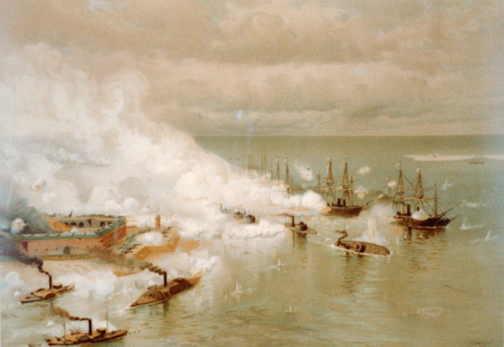

The sun rose slow on August 5th, 1864, exhaling a crisp breeze across Mobile Bay, the last gap in the Union blockade.
Three Confederate forts — Powell, Gaines and Morgan — stood over the water, their huge guns bristling in the cold. A squadron of warships, including the ironclad CSS Tennessee bobbed inside the Bay behind a field of 67 “torpedoes” floating just beneath the surface, predecessors of the naval mines used today. A hostile business climate for sure.
Know What You Know
To David G. Farragut, a Rear Admiral in the Union Navy, there were known challenges that could sink his fleet like the mighty cannons of the forts overlooking the Bay or the danger from the ships defending it. But the danger from the unknown — the explosive powder kegs hidden below the surface — was what Union strategists saw as the greatest risk to their endeavor.
Make a Plan
As General Dwight D. Eisenhower of the (still) United States said many years later, “Plans are useless, but planning is everything.”
Before engaging the Confederate fleet inside, Farragut would have to move the 18 Union ships — 14 wooden gunboats and four of the Navy’s new armored monitors — into the Bay through a single, well-marked break in the wall of torpedoes. The “break”, a narrow channel normally used by local ships to sail in and out of port, was perfectly positioned for the 26 guns of Fort Morgan to greet intruders with a hot leaden rain from the shore.
Responding to this competitive landscape, Farragut carefully positioned his ships for the attack. Led by the USS Tecumseh, the four ironclads ran in a line closest to the fort. They would (temporarily) shield the more vulnerable wooden column led by the Brooklyn, followed by Farragut’s own ship, the Hartford, as they steamed past the cannons.
Ready. Set. Launch.
Focus on the Important Over the Urgent
The plan unraveled immediately. Despite the importance of crossing through the gap to enter the Bay, the captain of the Tecumseh was distracted by the CSS Tennessee maneuvering toward the Union fleet from the other side of the minefield. He turned the Tecumseh across the path of the Brooklyn to engage the Confederate ship, causing the entire fleet to veer far away from the middle of the channel. Continuing past the warning buoys, the Tecumseh struck a mine. An explosion shattered the hull and in less than a minute the ship was gone beneath the waves.
Whoa.
The remaining ships froze at the edge of the gap. Off course and under heavy fire, the captain of the Brooklyn called out for instructions as the Hartford pulled to the front of the column.
Risk is Not a Static Value
Prior to battle, Farragut and his team judged the mines the greatest threat to the Union attack. As unknowns hidden beneath the waves, they could not be reliably neutralized. The known of cannon fire had been deemed a lesser obstacle, mitigated through ship formation and a rapid sail through their limited range. Balancing these relative risks formed the original decision to “run the gap."
But with momentum stalled directly beneath the fort, the odds of being sunk by cannon fire quickly rose. Farragut calculated the change in threat levels and likely outcomes, an agile process later formalized as the OODA Loop.
From high above the deck of the Hartford (where he was tied with rope halfway up the main mast because everyone had agreed "that would be awesome”), Farragut yelled out the new plan. The danger from the mines had not changed, but the odds of being blasted to bits from below were now lower than the newly elevated risk from the cannons up above. The fleet would likely be destroyed before it could turn back into the channel. His orders?
Though perhaps paraphrased by history, the command was clear: “Damn the torpedoes, full steam ahead!"
Ship, Measure, Adapt, Repeat
The fleet snapped back into action and followed the Hartford’s charge single-file through the mines (most of which turned out to be duds) and into the Bay. Finally out of range of Fort Morgan, Farragut’s remaining team worked through each next biggest problem in turn. The Confederate fleet was engaged and destroyed. Then a collaboration with the Army on shore brought the battle to a close and Union control of Mobile Bay.
Farragut and his team succeeded through data-driven decisions and well-communicated priorities. They monitored and acted upon new information as likely outcomes and threat levels changed, iterating in a repeatable fashion until victory was achieved.
As you and your team step back from the whiteboard to kick off your next big endeavor, make sure you’ve done your math. Watch your variables and follow the odds. Act decisively. Keep moving toward your goal—and have plenty of erasable markers.
Originally posted at ExitEvent